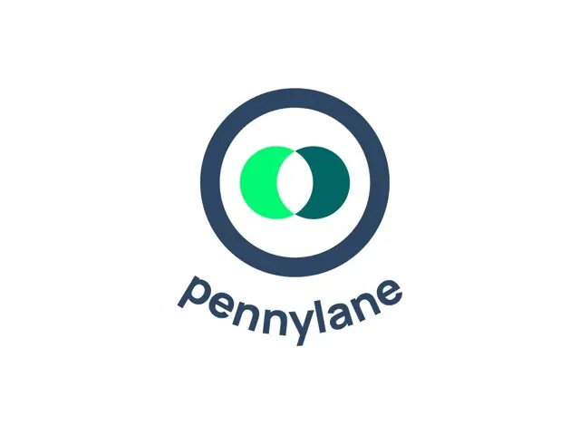

Pennylane : 7 € par mois minimum et 1 200 factures électroniques par an dans chaque formule
- Plus de formule gratuite depuis début novembre : l'offre Starter démarre à 7 € HT par mois, la Basique à 14 € HT.
- Le Starter exige d'ouvrir un compte pro Pennylane sous 30 jours, sinon l'abonnement passe en Basique.
- Toutes les formules émettent et reçoivent des factures électroniques, jusqu'à 1 200 par an, avec 15 jours d'essai.
Semaine calme côté annonces officielles. Ouest-France a publié le 17 novembre un décryptage de la nouvelle grille Pennylane pour les indépendants et petites structures : fin de la gratuité, entrée de gamme liée au compte bancaire Pennylane, et un plafond annuel de factures électroniques identique pour toutes les formules.
← Glisse sur le côté pour changer d'article →
Pourquoi c'est l'article du jour : la grille tarifaire est la première question des petits clients, et ces chiffres servent à recadrer la comparaison avec les offres gratuites des banques. Attention : l'article d'Ouest-France est un contenu « shopping » centré sur les indépendants ; les offres PME et cabinets suivent une autre grille.
- La formule Basique (14 € HT) garde la connexion à la banque actuelle du client, sans compte Pennylane obligatoire.
- En janvier, Pennylane a levé 175 M€ auprès de TCV et Blackstone Growth, pour une valorisation de 3,6 Md€.
- L'éditeur revendiquait alors 800 000 TPE et PME utilisatrices, environ 6 000 cabinets clients et 115 M€ de revenus récurrents annuels.
- Au hackathon Pennylane des 28 et 29 octobre, 85 participants ont monté 13 projets avec le MCP Pennylane et des outils d'IA comme Claude.
En bref
• Webinar Pennylane mardi 24 novembre à 11h sur le dépôt de capital, passé à 1 € au lieu de 69 €.
• L'Allemagne reste le premier marché européen de Pennylane, avec une vingtaine de commerciaux à Munich et Berlin.